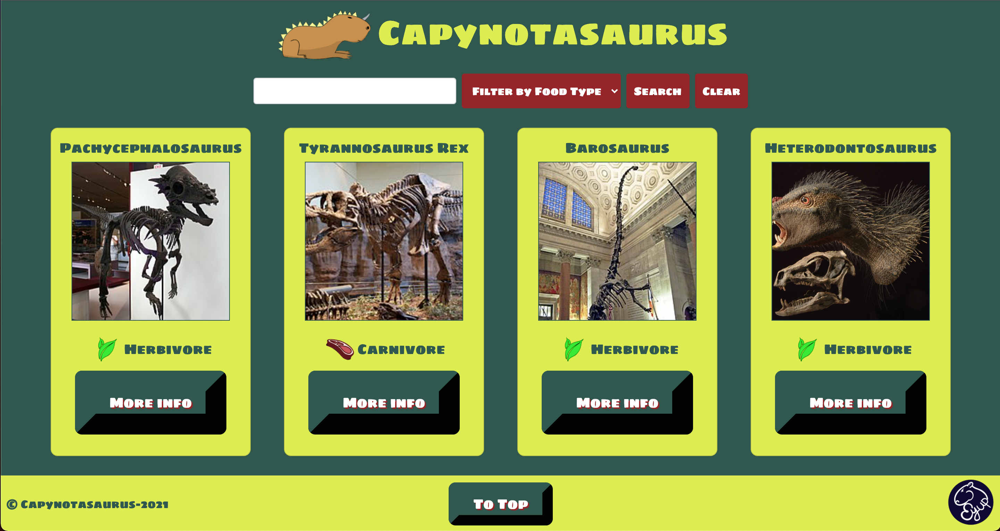
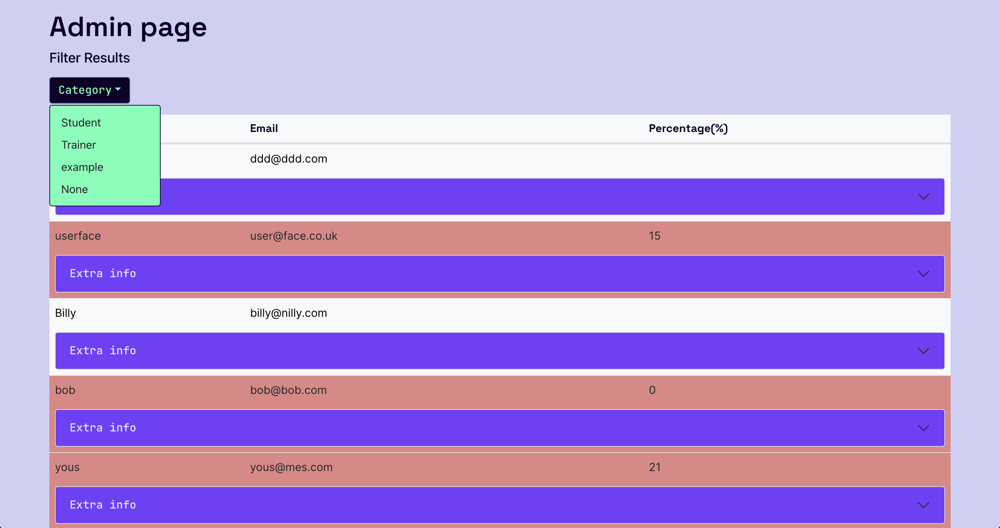
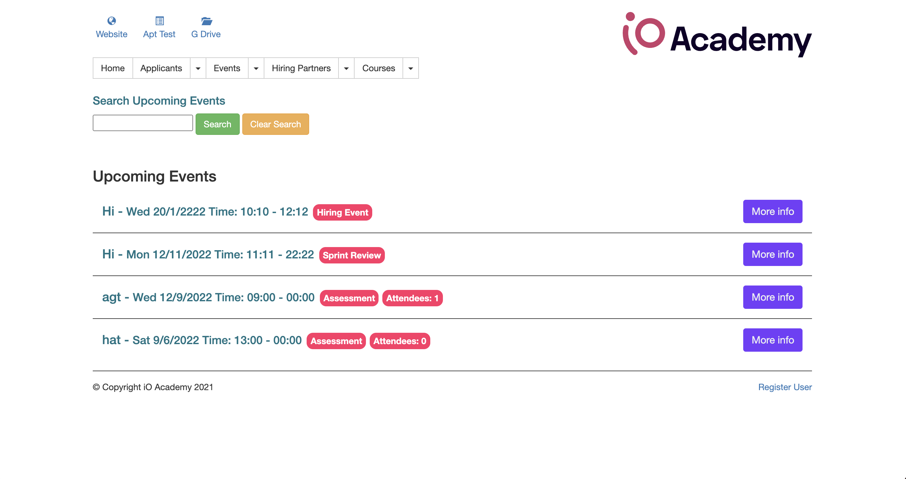

Hi, I'm Jess...
About me
I’ve always had a passion for problem solving, and after 4 years studying Chemistry at Oxford University, I wanted a job in STEM. However, I hoped to work in a different field, so I enrolled on a 16-week full-stack developer course with iO Academy. I am enthusiastic when facing a challenge and am look forward to learning new tech in the future. In my free time I love cooking, doing all things crafts and participating in competitive cheerleading.
Portfolio
Listing App
This OOP based greenfield project was built using PHP with a focus on best practice code, creating a design architecture and adopting the SOLID principles. I worked on adding a filter to the app which sent a MySQL query to the database, displayed the currently applied filter to the user and worked alongside the existing search functionality.
iO Academy Aptitude Test
In this project we re-built the app iO academy uses to test the aptitude of new students for the course. Working as a scrum team, in tandem with two other teams, we used a JavaScript framework (React) and a pre-built API to complete this project. Our team worked on displaying applicants in the admin page from the API, with a focus on the responsiveness of the site. This was achieved using Bootstrap.
Academy Portal
Using the PHP Slim framework, we worked on this MVC legacy project to add new features and make improvements to the existing Academy Portal. As scum master for this project, I communicated across teams to enable my team to work effectively. I also worked on the events page, adding extra functionality to the JavaScript file to calculate attendee number and expanding the on-click functionality.